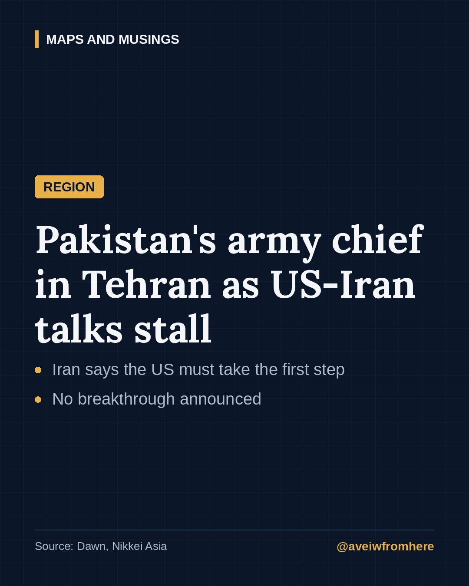
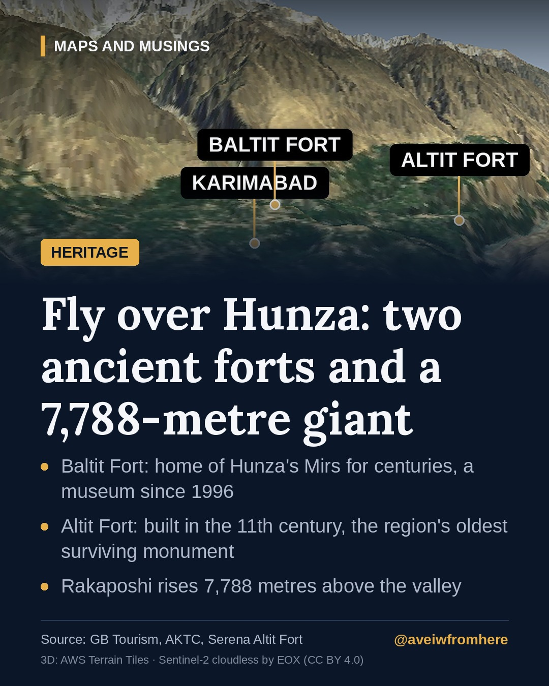
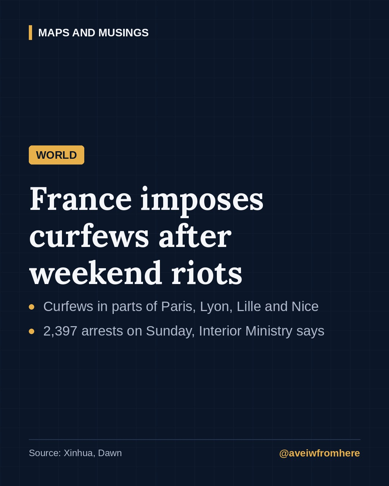
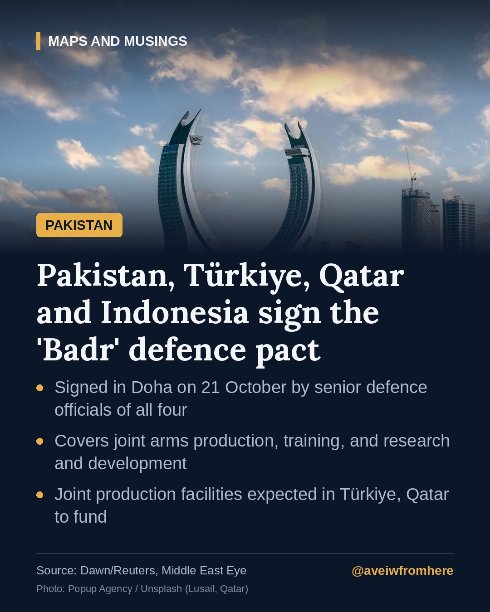

Pakistan and the world, explained.
Fact-checked stories on politics, the region, world news, nature and heritage.

The UN says this El Niño could be 'off the charts'. What that means
The World Meteorological Organization warns the Pacific could run 3.8°C above average this winter, and the UN has released $50 million to help the most exposed countries prepare.

Pakistan's army chief in Tehran as US-Iran talks stall
Field Marshal Asim Munir held talks with Iran's top leadership on reviving negotiations with Washington. Tehran says the US must move first.

Hunza's two forts and the mountain that watches over them
Baltit and Altit forts tell the story of the Hunza kingdom, and Rakaposhi's 7,788-metre peak towers over them both. A short guide.

France under curfew after a weekend of riots
Night curfews now cover parts of Paris, Lyon, the Lille area and Nice after protests turned violent, six months before France's presidential election.

Badr: what we know about the new Pakistan-Türkiye-Qatar-Indonesia defence pact
Four Muslim-majority countries have signed a memorandum in Doha on joint defence production, training and research. Here is what it covers, and what it does not.

Attabad Lake: the lake that was born from a disaster
In 2010, a massive landslide blocked the Hunza River. The water that rose behind it became one of Gilgit-Baltistan's best-known sights.